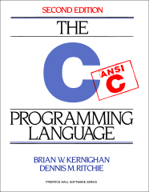

Everyone:
Next week, we will have Exam 03, which will cover programming in C with a focus on: compiling and building, pointers, arrays, strings, memory allocation, linked lists, bitsets, and data representation. This reading assignment is meant to prepare you for this exam and is based on the items in Checklist 03.
Because of the exam on Wednesday, April 2, there will be no homework for the upcoming week.
The focus of this reading is to allow you to review for Exam 03.

The readings for this week are:
You may wish to review Reading 08 and Reading 09 along with the quizzes in Homework 06 and Homework 07.
This week, the reading is split into two sections: the first part is a dredd quiz, while the second part involves debugging a C program: str_counts.c.
To test the C program, you will need to download the Makefile and test scripts:
$ git switch master # Make sure we are in master branch
$ git pull --rebase # Make sure we are up-to-date with GitHub
$ git checkout -b reading10 # Create reading10 branch and check it out
$ cd reading10 # Go into reading10 folder
# Download Reading 10 Makefile
$ curl -LO https://www3.nd.edu/~pbui/teaching/cse.20289.sp25/static/txt/reading10/Makefile
# Download, build, and execute tests
$ make test
Record the answers to the following Reading 10 Quiz questions in your
reading10 branch:
The purpose of str_counts.c is to perform the equivalent of the following unix pipeline:
# Show counts of each letter
$ echo ... | grep -Eio [a-z] | sort | uniq -c
Given the provided str_counts.c and Makefile, you are to do the following:
Modify Makefile to include a rule for the str_counts program. Be
sure to use the CC and CFLAGS variables in your rule.
Modify str_counts.c so that it no longer has any uninitialized memory accesses, memory leaks, invalid memory acceses, or logical errors.
str_counts must not modify the original string (hence the
const char *).
Use this as an opportunity to utilize gdb and valgrind to debug str_counts.c.
Once you have a working Makefile, you should be able to use the make command to run your recipes:
$ make clean # Remove targets
rm -f str_counts
$ make # Build targets
gcc -Wall -g -std=gnu99 -o str_counts str_counts.c
$ echo hello | ./str_counts # Test manually
1 e
1 h
2 l
1 o
$ make test # Test scripts
To submit you work, follow the same process outlined in Reading 01:
#--------------------------------------------------
# BE SURE TO DO THE PREPARATION STEPS ABOVE
#--------------------------------------------------
$ cd reading10 # Go into reading10 folder
$ $EDITOR answers.json # Edit your answers.json file
$ ../.scripts/check.py # Check reading10 quiz
Checking reading10 quiz ...
Q1 0.40
Q2 0.40
Q3 0.60
Q4 0.20
Q5 0.40
Score 2.00 / 2.00
Status Success
$ git add answers.json # Add answers.json to staging area
$ git commit -m "Reading 10: Quiz" # Commit work
$ $EDITOR str_counts.c # Edit source code
$ make test # Build and Run tests
Checking reading10 str_counts ...
str_counts ... Success
str_counts hello world ... Success
str_counts obscure ... Success
str_counts reasonable exam ... Success
Score 1.00 / 1.00
Status Success
$ git add Makefile # Add Makefile to staging area
$ git add str_counts.c # Add source code to staging area
$ git commit -m "Reading 10: Code" # Commit work
$ git push -u origin reading10 # Push branch to GitHub
If you collaborated with any other students, or received help from TAs or AI
tools on this assignment, please record this support in the README.md in
the reading10 folder and include it with your Pull Request.
Remember to create a Pull Request and assign the appropriate TA from the Reading 10 TA List.
DO NOT MERGE your own Pull Request. The TAs use open Pull Requests to keep track of which assignments to grade. Closing them yourself will cause a delay in grading and confuse the TAs.